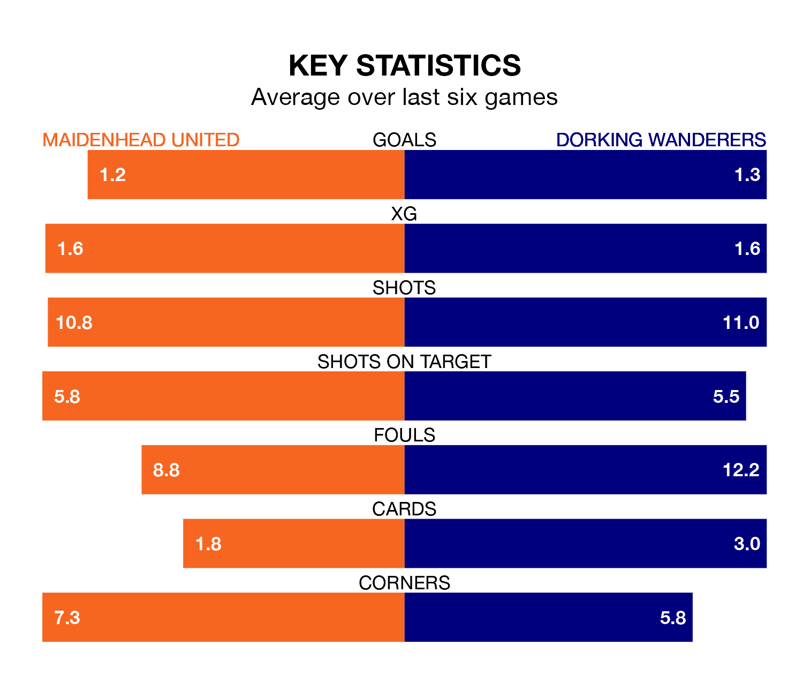

Maidenhead United are on a poor run ahead of hosting Dorking Wanderers at the York Road Stadium on Saturday, with just three points collected from their last six games.
Maidenhead have picked up just one win in their last six National League games, and face a Wanderers side whose last six games have brought two wins and one draw.
Dorking are 21st in the table after 36 games, of which they have won 12 and drawn five, earning 41 points.
Maidenhead are two places ahead of Wanderers in 19th, with 10 wins and 12 draws putting them on 42 points.
In the last five years, Maidenhead and Dorking have played each other on four occasions. Maidenhead won one of them, Dorking two, and they drew once.
On average, Maidenhead scored 1.0 goal and Wanderers 1.8 in those matches.
Their last meeting was on December 9, when Dorking won 3-0 at home.
With 39 goals in 37 games so far this season, United are the league's joint-third-lowest scorers with 1.1 goals per game. But they are conceding fewer than average too, letting in 51 goals at a rate of 1.4 per game.
The visitors are also below average scorers, with 1.2 goals per game, compared to a league average of 1.5. They have conceded 1.7 goals per game.
Maidenhead's last match was on March 2, a 4-1 loss against Fylde, with Reece Smith getting the goal for Maidenhead.
Dorking lost 2-1 against Altrincham last time out, on Tuesday, with Tom Blair on the scoresheet.
Updated: 09:34 (UTC), 08/03/24